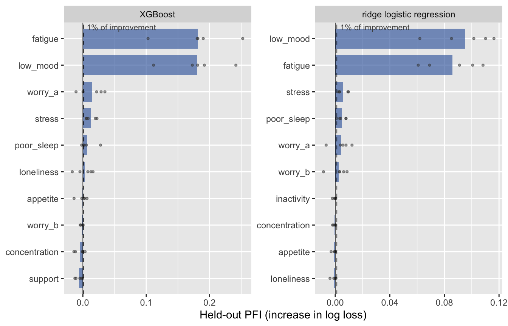

mlr3autoiml helps researchers decide whether the evidence supports a conclusion that they draw from an explanation of a machine learning model, such as “the model relies mainly on self-rated health.” It implements Claim-Scoped Diagnostic Gates (CSDG) for the mlr3 ecosystem. An analysis runs in its usual order:
-
Fit learners and a model without predictors on the same cross-validation splits with
mlr3::benchmark()(csdg_fit()). -
Look at held-out permutation feature importance (PFI), also grouped and conditional (
csdg_importance()), or at accumulated local effects (csdg_effect()). -
State a claim that the result suggests (
claim_relies_mainly(),claim_top_k(),claim_order(),claim_direction()). -
Check it: the package derives the properties that the claim requires from the 12 gates of the article and computes the default checks (
csdg_check()). -
Assess it with a fixed decision rule (
csdg_assess()) and test it on new data with the same criteria (csdg_confirm()).
The package writes the claim, its scope, the criteria, and the observations from the computations. Properties that cannot be computed, such as validity evidence for a construct, are entered with csdg_judge(). Favorable results never offset a contradicted property, and no aggregate score is computed. Claims, scopes, and evidence can also be recorded by hand (csdg_claim(), csdg_evidence_record(), csdg_adjudicate_claim()).
| Term | Values |
|---|---|
| Scope elements | quantity, model, procedure, data, meaning (model description, population claim, causal claim), use |
| Evidence roles | required property, established counterevidence, unresolved threat, context |
| Status of a required property | supported, contradicted, open |
| Assessment of a claim | not met if a required property is contradicted; otherwise unresolved if one is open; otherwise met |
| Decision | a met claim is retained; a claim that is not met or unresolved is revised or withheld |
Installation
Install the current version from GitHub:
remotes::install_github("coorsaa/mlr3autoiml", build_vignettes = TRUE)
library(mlr3autoiml)Released versions are tagged, for example remotes::install_github("coorsaa/mlr3autoiml@v0.2.0").
Quick start
A simulated survey of 500 respondents has 12 items and a binary outcome. Two scale scores, low_mood and fatigue, predict it strongly; worry_a and worry_b are two wordings of one worry item; three items have weak effects and five none.
library(mlr3)
library(mlr3learners)
library(mlr3autoiml)
library(data.table)
simulate_survey = function(n, seed) {
set.seed(seed)
items = c("low_mood", "fatigue", "worry_a", "worry_b", "poor_sleep", "stress", "loneliness", "inactivity",
"appetite", "concentration", "support", "optimism")
x = as.data.table(matrix(rnorm(n * 12), n, 12, dimnames = list(NULL, items)))
worry = rnorm(n)
x[, worry_a := as.integer(cut(worry + rnorm(n, sd = 0.3), c(-Inf, -1.2, -0.4, 0.4, 1.2, Inf)))]
x[, worry_b := pmin(5L, pmax(1L, worry_a + ifelse(runif(n) < 0.02, sample(c(-1L, 1L), n, TRUE), 0L)))]
eta = -0.3 + 1.2 * x$low_mood + 1.1 * x$fatigue + 0.7 * worry + 0.3 * x$poor_sleep + 0.2 * x$stress +
0.15 * x$loneliness
x[, low_wellbeing := factor(rbinom(n, 1, plogis(eta)), levels = c(0, 1))]
as_task_classif(x, target = "low_wellbeing", positive = "1", id = "survey")
}
task = simulate_survey(500L, seed = 3L)Fit and look. XGBoost and ridge logistic regression are fitted on the same five folds as a model without predictors; held-out PFI is the increase in held-out log loss when one predictor is permuted. Common learners are labeled by their method in all generated text.
learners = list(
xgboost = lrn("classif.xgboost", nrounds = 100, eta = 0.1, max_depth = 3, predict_type = "prob"),
ridge = lrn("classif.cv_glmnet", alpha = 0, nfolds = 5, predict_type = "prob")
)
fits = csdg_fit(task, learners, folds = 5, seed = 1)
imp = csdg_importance(fits, repetitions = 10, seed = 2)
imp
#> <CSDGImportance> held-out PFI, increase in log loss; 5 folds x 10 permutations
#> XGBoost: held-out log loss 0.607 versus 0.681 for the model without predictors (improvement 0.0743)
#> predictor mean PFI relative to improvement folds in top 2
#> fatigue 0.181 244% 5/5
#> low_mood 0.180 242% 5/5
#> worry_a 0.0149 20% 0/5
#> stress 0.0123 17% 0/5
#> poor_sleep 0.0069 9.3% 0/5
#> loneliness 0.0030 4.1% 0/5
#> ... 6 more predictors
#> ridge logistic regression: held-out log loss 0.560 versus 0.681 for the model without predictors (improvement 0.121)
#> predictor mean PFI relative to improvement folds in top 2
#> low_mood 0.0950 79% 5/5
#> fatigue 0.0860 71% 5/5
#> stress 0.0055 4.5% 0/5
#> poor_sleep 0.0048 4.0% 0/5
#> worry_a 0.0046 3.8% 0/5
#> worry_b 0.0025 2.1% 0/5
#> ... 6 more predictors
#> Folds in top 2: folds in which the predictor has one of the 2 largest PFI values (print(imp, k = )).
#> PFI values are not parts of the improvement, so PFI relative to the improvement can exceed 100%.
plot(imp)
Claim, check, and assess. The result suggests that XGBoost relies mainly on low_mood and fatigue. claim_relies_mainly() states the claim, csdg_check() computes the properties that it requires, and csdg_assess() applies the decision rule.
claim = claim_relies_mainly(imp, k = 2, factor = 2, learners = "xgboost")
chk = csdg_check(claim, imp)
chk
#> <CSDG check> XGBoost relies mainly on fatigue and low_mood.
#> Criteria (defaults, see ?csdg_check): minimum importance 1% of the improvement;
#> at least 5 of 5 folds; Monte Carlo rule; corrected 95% interval must clear the
#> smallest relevant difference.
#> gate check status observation
#> G0a/b scope supported The six scope elements are generated
#> from the analysis; the claim names
#> analyzed variables, not constructs.
#> G1 performance context Held-out log loss 0.607 versus 0.681
#> for the model without predictors
#> (improvement 0.0743, 11%); 4 of 5 folds
#> improve.
#> G2 content supported fatigue 0.181 and low_mood 0.180 versus
#> 0.0149 for worry_a, the largest other
#> predictor (12.2 and 12.0 times); margin
#> (PFI minus 2 x PFI of worry_a) 0.152
#> [0.0576, 0.246] and 0.150 [0.0779,
#> 0.222]. Against the largest other
#> predictor of each fold, which can
#> differ between folds: 0.134 [0.0448,
#> 0.223] and 0.133 [0.0432, 0.222].
#> G2 minimum importance supported fatigue 0.181 (244%) and low_mood 0.180
#> (242%) of the improvement of 0.0743
#> (0.681 to 0.607).
#> G2 procedure supported Held-out marginal PFI with log loss, 10
#> permutations per fold in 5 folds, as
#> the scope names. No grouped or
#> conditional comparison was requested.
#> G5 stability supported Selected anew in each fold: 5 of 5
#> folds reproduce the result (cutoff 1: 0
#> of 5; cutoff 3: 1 of 5).
#> G6a other learner context ridge logistic regression: the result
#> also holds (fatigue 0.0860 and low_mood
#> 0.0950 versus 0.0055 for stress).
csdg_assess(chk)
#> <CSDG assessment> XGBoost relies mainly on fatigue and low_mood.
#> Met (exploratory)
#> Specification (G0a) supported | Measurement (G0b) supported | Content (G2)
#> supported | Minimum importance (G2) supported | Procedure (G2) supported |
#> Stability (G5) supported
#> On average, fatigue and low_mood have 12.2 and 12.0 times the PFI of the
#> largest other predictor, worry_a; the result recurs in 5 of 5 folds. The
#> claim was formulated after the explanation was inspected; it is established
#> only after a test on new data (csdg_confirm()).
#> Decision options: retainThe claim was formulated after the explanation was inspected, so its assessment is exploratory; csdg_confirm(chk, new_task) fits the same learners to new data and applies the claim with the same criteria.
Learn more
-
Checking what an explanation shows (
vignette("exploratory_workflow", package = "mlr3autoiml")) works through the simulated survey with 1,000 respondents: a claim that is met, a claim about the two wordings that conditional PFI contradicts, a direction, and the test on new data. -
The numerical example of the article (
vignette("claim_scoped_diagnostic_gates", package = "mlr3autoiml")) assesses the three claims of the article’s numerical example. -
The function reference documents every function, including the diagnostics of
csdg_audit()and the local surrogate described in?csdg_diagnostics. -
csdg_claim_record_template()returns the blank claim record of the article as a table to fill in, andsupported(),contradicted(), andopen_status()return the three property statuses. - Labels of versions before 0.1.6 still work with a deprecation warning; see the migration note and the changelog.
Diagnostics in an mlr3 workflow
csdg_audit() derives the gate plan and computes the diagnostics of an mlr3 learner: held-out performance, dependence and support, calibration, decision curves, cross-fitted local fidelity, stability of held-out PFI, comparisons with similarly accurate models, leave-one-setting-out refits, and subgroup results. csdg_report_card() lists the gates with the status of each required property, and csdg_claim_report() applies the decision rule to the audit and to evidence records that the researcher supplies. A numerical criterion needs a source and a rationale; without them, the property remains open. By default, csdg_export() omits fitted models and observation-level predictions; review the generated bundle before sharing it.
The accompanying article
Version 0.1.0 produced the primary analyses of the accompanying article. The scripts of its two empirical applications are kept in a separate analysis repository.
Legacy AutoIML workflow
The earlier AutoIML interface remains available for compatibility. Its gate identifiers and pass/warn/fail/skip labels are separate from the CSDG gate registry and vocabulary. Its examples and gate overview are in the legacy AutoIML article (vignette("legacy_autoiml", package = "mlr3autoiml")); new analyses start from the CSDG interface above.